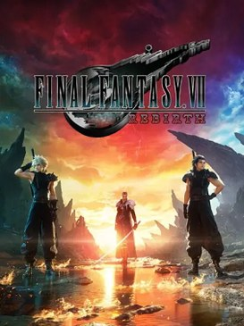
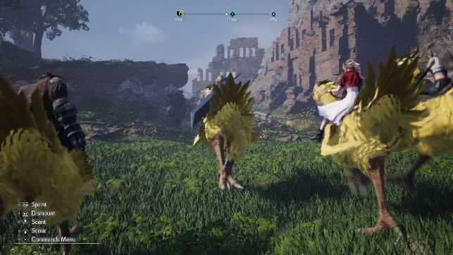
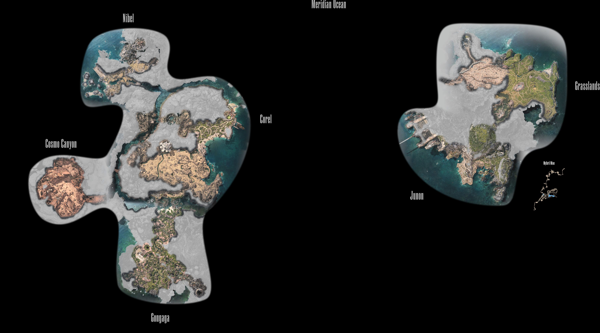

Complément
Introduction

Jaquette © SQUARE ENIX. Guide non officiel.

Cloud, Tifa, Aerith et Barret à dos de chocobo
La carte interactive
Zoome, déplace-toi et touche un repère : il t'emmène à l'endroit du guide qui en parle.

· molette ou pincement pour zoomer, glisser pour se déplacer ; touche un repère pour voir ce que c'est et ouvrir la partie du guide qui en parle.
Cartes interactives
Dans les tableaux de butin, les objets suivis de Voir sur la carte ouvrent la carte interactive de Map Genie (site en anglais) pile sur leur emplacement, le plus souvent avec une capture d'écran. Il faut du réseau pour ouvrir la carte. Carte complète : le monde. Au début de l'Itinéraire des parties, La zone en images renvoie en plus à une soluce illustrée en français quand il en existe une.
Objectif
Te faire démarrer Final Fantasy VII Rebirth en sachant ce qui compte, ce qui peut se rater définitivement et dans quel ordre lire ce guide.
⏳ Lis cette partie en entier avant de lancer le jeu. Elle fait vingt minutes et elle t'économisera des dizaines d'heures — notamment parce que trois des contenus les plus longs du jeu commencent au chapitre 2 et se poursuivent jusqu'à la fin : le Queen's Blood, l'affinité et les Rapports de Chadley. Si tu les découvres au chapitre 10, tu as déjà pris beaucoup de retard.
Itinéraire
Le jeu en quelques lignes
Final Fantasy VII Rebirth est le deuxième volet du projet de remake, après Final Fantasy VII Remake (2020). Il reprend l'histoire à la sortie de Midgar et la mène jusqu'au temple des Anciens.
| Donnée | Valeur |
|---|---|
| Développeur / éditeur | Square Enix |
| Sortie ps5 | 29 février 2024 |
| Sortie PC (Steam, Epic Games Store) | 23 janvier 2025 |
| Sortie Switch 2, Xbox Series X|S, Xbox sur PC | 3 juin 2026 |
| Version couverte par ce guide | La mise à jour du 3 juin 2026, la même sur toutes les plateformes : 1.005 sur Steam et Epic Games Store, 1.090 sur PS5 |
| Chapitres | 14 |
| Régions semi-ouvertes | 6, plus l'Océan Central et les îles |
| Personnages jouables | 7 |
| Durée de l'histoire seule | ≈ 40 heures |
| Durée du 100 % | ≈ 120 à 150 heures, avec une seconde partie obligatoire (voir plus bas) |
Pas besoin d'avoir fini Remake pour comprendre Rebirth, mais le jeu suppose que tu connais les personnages et la fin de Midgar. Un résumé est consultable depuis le menu principal.
Ce qui change par rapport au premier volet
| Nouveauté | Ce que ça implique |
|---|---|
| Les régions semi-ouvertes | Le vrai volume du jeu est là : les Rapports de Chadley, les quêtes annexes, les protoreliques |
| Les actions et compétences synchronisées | Deux mécaniques distinctes, souvent confondues (partie 22) |
| Les codex | Des arbres de compétences par personnage, nourris par les PA |
| Le Queen's Blood | Un jeu de cartes complet, avec 145 cartes et un tournoi manquable |
| L'affinité | Un système relationnel qui décide de la scène du Gold Saucer et de deux objets de collection |
| La synthèse | Le craft, qui remplace l'achat de consommables |
| Les chocobos | Une monture par région, avec sa propre capacité de déplacement |
| Les mini-jeux | Une trentaine, dont beaucoup obligatoires pour le 100 % |
Les systèmes essentiels, en une page chacun
Le combat. C'est de l'action-RPG à jauge ATB : tu frappes en temps réel pour remplir tes barres d'ATB, puis tu ouvres le menu — le temps ralentit — pour dépenser ces barres en sorts, compétences et objets. Rien de ce qui compte ne se fait en tapant : les dégâts sérieux viennent du menu.
La boucle à comprendre dès le chapitre 1 :
- Analyse l'ennemi (matéria Analyse) pour voir sa faiblesse.
- Exploite la faiblesse pour remplir sa jauge de Choc.
- Mets-le en état de Choc : il ne bouge plus et prend beaucoup plus de dégâts.
- Vide tout pendant le Choc — Techniques de Transcendance, sorts, compétences.
L'état de Choc est le cœur du système de combat. Un boss qui te semble impossible est presque toujours un boss que tu n'as pas mis en Choc.
La progression. Trois monnaies d'expérience qu'il ne faut pas confondre :
| Ressource | Sigle | À quoi ça sert |
|---|---|---|
| Expérience | Exp | Le niveau du personnage (maximum 70) |
| Points de compétence | PC | Faire monter les matérias |
| Points d'aptitude | PA | Acheter les cases des codex |
Les PC ne sont pas les PV. Et la matéria « PC augmentés » n'est pas « PV augmentés » : ce sont deux matérias distinctes, de deux couleurs différentes.
Les matérias. Des sphères qu'on équipe dans les emplacements des armes et des bracelets. Cinq couleurs, cinq rôles :
| Couleur | Rôle | Exemples |
|---|---|---|
| Verte | Magie | Feu, Glace, Foudre, Soin |
| Jaune | Commandes | Analyse, Vol, Provocation |
| Violette | Compétences passives | PV augmentés, Barrières magiques |
| Bleue | Soutien | Se couple à une matéria voisine — PC augmentés, Magie généralisée |
| Rouge | Invocations | Titan, Phénix, Odin |
Une matéria bleue n'a d'effet que couplée à la matéria de l'emplacement relié. Les matérias gagnent des PC et montent en niveau ; une matéria niveau max peut être dupliquée chez Chadley.
L'économie. Tu ne manqueras pas de gils si tu explores et si tu pratiques la synthèse. Les seules dépenses obligatoires du 100 % sont 2 000 gils pour la protorelique des brigands, 1 300 gils pour les deux traversées de Cid, et 3 000 Points du Gold Saucer pour la matéria Gain de gils (partie 32).
La synthèse. Tu obtiens l'appareil au chapitre 2. La règle qui change tout : la première fabrication d'un objet rapporte de l'expérience de synthèse et réduit ses coûts futurs. Donc : ramasse tout, tue tout (les monstres donnent des matériaux), et fabrique chaque nouvel objet au moins une fois.
Les chocobos. Une monture par région, chacune avec sa capacité de déplacement : grimper les murs, planer, nager, rebondir sur les champignons. Attrape le chocobo de la région dès que tu y entres : sans lui, une partie du contenu est inatteignable.
L'ordre de lecture conseillé
| Quand | Lis |
|---|---|
| Avant de lancer le jeu | Cette introduction, puis la partie 22 (le combat) |
| Au chapitre 2 | Les parties 23 (matérias), 26 (affinité) et 27 (Queen's Blood) |
| Au chapitre 2, quand la Prairie s'ouvre | La partie 15, et le début de la partie 29 (objets à collectionner) |
| À chaque nouveau chapitre | La partie correspondante (01 à 14) |
| À chaque nouvelle région | La partie correspondante (15 à 21) |
| Au chapitre 6 | La partie 28 (mini-jeux) — le Carnaval des cartes est au chapitre 6 |
| Avant le chapitre 13 | La partie 13 en entier : le point de non-retour du jeu est là |
| Après le générique | Les parties 30, 31 et 32 |
| En permanence | Les annexes (99) : la liste des manquables |
Déroulé pas à pas
Les choses à faire dans les trois premières heures
- Chapitre 1 — Rien à collectionner, c'est un prologue. Concentre-toi sur la boucle Analyse → faiblesse → Choc contre le Gardien de matéria.
- Chapitre 2, à Kalm — Apprends le Queen's Blood tout de suite. Chaque PNJ battu donne des cartes, et le classement de joueur met des dizaines d'heures à monter.
- Chapitre 2 — Récupère l'appareil de synthèse et fabrique immédiatement tout ce que tu peux.
- Chapitre 2, la Prairie — Active les tours de Chadley, attrape le chocobo, commence les Rapports.
- Partout — Parle à tout le monde. Les quêtes annexes sont la principale source d'affinité, et l'affinité décide d'une scène unique au chapitre 12.
Les quatre pièges du début de partie
| Piège | Pourquoi c'est grave | La parade |
|---|---|---|
| Négliger le Queen's Blood | 145 cartes et un rang de joueur à monter ; le tournoi du chapitre 5 est manquable | Joue contre chaque PNJ dès Kalm |
| Négliger l'affinité | Elle décide de la scène du chapitre 12 et de 2 objets de collection | Fais les quêtes, choisis les bonnes répliques (partie 26) |
| Avancer dans l'histoire en laissant une région derrière | Certaines régions se referment, et le chapitre 13 est un point de non-retour | Boucle chaque région avant de passer au chapitre suivant |
| Vendre ou consommer un matériau rare | Le Sarment du grand morbol, la Corne de jabberwocky et les débris du roi des pirates sont obligatoires ailleurs | Ne consomme rien de rare (partie 32) |
Pourquoi le 100 % demande deux parties
Deux objets de collection sont incompatibles dans une seule partie : ils exigent Tifa et Yuffie comme partenaires de rendez-vous au chapitre 12, ce qui est impossible simultanément.
⏳ Donc le 100 % passe obligatoirement par la sélection de chapitres, débloquée après le générique. Ce n'est pas une punition : la sélection de chapitres conserve ton équipement et tes niveaux, et le mode Difficile s'y fait aussi (partie 31).
Les aides facultatives de la version 1.005
Depuis la mise à jour du 3 juin 2026, deux systèmes sont disponibles :
| Système | Ce qu'il fait |
|---|---|
| Aides de jeu | PV et PM illimités, 9 999 de dégâts en combat et en mini-jeu, quantités d'objets au maximum — activables option par option, à tout moment |
| Nouvelle partie avantagée | Commencer au niveau 65 (maximum 70) avec des matérias déjà améliorées |
Noms français à vérifier en jeu : ces deux libellés restent à confirmer mot pour mot dans le menu.
Mon conseil : n'y touche pas pour l'histoire, mais les Aides de jeu sont une bénédiction pour les mini-jeux les plus pénibles (partie 28).
Quêtes et lieux
| Lieu | Quand | Pourquoi il compte |
|---|---|---|
| Kalm | Chapitre 2 | Premier hub : Queen's Blood, synthèse, boutiques |
| Les tours de Chadley | Chaque région | Elles révèlent les Rapports sur la carte |
| Junon | Chapitres 4 et 12 | La Parade, les boutiques, Fort Condor |
| Costa del Amor | Chapitre 6 | Le Carnaval des cartes, manquable |
| Le Gold Saucer | Chapitres 8 et 12 | La moitié des mini-jeux du jeu, et la scène de rendez-vous |
| Cosmo Canyon | Chapitre 10 | Le hub du dernier tiers |
| Le simulateur de combat | Partout, via Chadley | Les combats d'Esper, les défis, le farm |
Butin exhaustif
Les objets que tu peux avoir dès le départ, avant même de jouer.
| Nom exact | Type | Où / comment l'obtenir | Utilité |
|---|---|---|---|
| Léviathan | Matéria d'invocation rouge | Menu de Bonus : une sauvegarde de Final Fantasy VII Remake sur la console | Invocation disponible dès le début de partie |
| Ramuh | Matéria d'invocation rouge | Menu de Bonus : une sauvegarde du DLC episode INTERmission | La plus utile des quatre bonus : Foudre, recommandée sur trois boss d'histoire |
| Trio de Mogs | Matéria d'invocation rouge | Menu de Bonus : précommande numérique ou édition Collector | Confort ; pas nécessaire au 100 % |
| Pot magique | Matéria d'invocation rouge | Menu de Bonus : précommande / édition | Confort ; pas nécessaire au 100 % |
| Appareil de synthèse | Objet clé | Automatique, chapitre 2 | Débloque le craft |
| Matéria Analyse | Matéria jaune | Automatique, chapitre 1 | La matéria la plus importante du jeu : elle révèle les faiblesses |
⏳ Ces quatre invocations bonus ne sont pas nécessaires au 100 % : elles ne comptent pas pour le trophée « Bretteur légendaire », donc ne pas avoir la bonne édition ne te bloque rien. Elles se réclament dans le menu de Bonus, et le détail des quatorze invocations est dans la partie 25.
Conseils et pièges
Les dix conseils de départ
- Équipe Analyse et utilise-la sur chaque nouvel ennemi. C'est gratuit, ça remplit la base de données de Chadley, et ça te dit quoi faire.
- Apprends à parer, pas seulement à esquiver. La parade au bon moment remplit de l'ATB ; l'esquive ne donne rien.
- Change de personnage constamment. Le personnage que tu contrôles remplit son ATB bien plus vite que ceux gérés par l'IA.
- Garde une Technique de Transcendance en réserve pour le Choc. C'est la différence entre « ce boss est dur » et « ce boss est tombé en douze secondes ».
- Monte tes matérias de soin en priorité. Soin niveau 2 puis 3 change complètement la survie.
- Fais les Rapports de Chadley au fur et à mesure. Ils donnent des matérias, des invocations et des objets qu'on ne trouve nulle part ailleurs.
- Joue au Queen's Blood à chaque occasion. Chaque adversaire donne une carte, et le rang monte lentement.
- Fais les quêtes annexes dans la région où elles apparaissent. Elles donnent l'affinité, des accessoires et des recettes.
- Synthétise plutôt que d'acheter. Et crafte chaque objet nouveau une fois.
- ⚠️ Lis la partie 13 avant d'y entrer. C'est le point de non-retour du jeu.
Les erreurs classiques de débutant
| Erreur | Conséquence | Ce qu'il faut faire |
|---|---|---|
| Taper sans ouvrir le menu | Dégâts dérisoires | L'ATB se dépense dans le menu |
| Ignorer l'état de Choc | Les boss durent dix minutes | Faiblesse → Choc → tout vider |
| Laisser l'IA gérer les alliés | Leurs barres d'ATB dorment | Change de personnage, ou utilise les commandes depuis le menu |
| Confondre action et compétence synchronisées | Tu passes à côté de dégâts gratuits | L'action synchronisée est gratuite, sur R1 + une touche (partie 22) |
| Oublier de vérifier les emplacements de matérias | Des matérias bleues inutiles | Une matéria bleue doit être dans un emplacement relié à sa cible |
| Se précipiter dans les chapitres | Des manquables définitifs | Boucle la région, puis avance |
| Farmer avant le générique | Six fois moins efficace | Attends le ×3 post-générique (partie 32) |
Ce que ce guide fait et ne fait pas
- Il suit l'ordre de progression du joueur : les parties 01 à 14 se lisent en jouant, pas avant.
- Les spoilers sont légers : les titres de chapitres sont les titres officiels, et les révélations majeures sont évoquées sans être détaillées.
- Il marque ce qu'il n'a pas pu vérifier. Toutes les mentions « ⚠️ à vérifier en jeu » sont regroupées dans les annexes (partie 99).
- Il donne les noms français officiels, avec le nom anglais entre parenthèses quand il aide.
Alertes
- ⚠️ Le chapitre 13 contient le point de non-retour du jeu. Tout ce qui n'est pas fait avant est reporté après le générique.
- ⚠️ Le tournoi de Queen's Blood du chapitre 5 est le pire manquable du jeu : il ne revient pas.
- ⚠️ Le Carnaval des cartes du chapitre 6 est manquable.
- ⚠️ Deux objets de collection sont impossibles dans une seule partie : la sélection de chapitres est obligatoire pour le 100 %.
- ⚠️ Certains chapitres contiennent des points de non-retour internes : le dauphin du chapitre 4, le drainage du chapitre 9.
- ⚠️ Ne consomme ni le Sarment du grand morbol, ni la Corne de jabberwocky, ni les débris du roi des pirates.
- ⚠️ Ne farme pas avant le générique : l'Exp et les PC y sont multipliés par trois.
Check-list
Avant de lancer le jeu
- Cette introduction lue
- La partie 22 (le combat) lue
- Menu de Bonus consulté : Léviathan et Ramuh si tu as les sauvegardes, Trio de Mogs et Pot magique si tu as l'édition
Les trois premières heures
- La boucle Analyse → faiblesse → Choc comprise
- Parade et changement de personnage intégrés
- Appareil de synthèse récupéré (chapitre 2)
- Premier craft effectué
- Premier duel de Queen's Blood gagné (Kalm)
- Premières tours de Chadley activées (Prairie)
- Chocobo de la Prairie attrapé
Les réflexes à garder toute la partie
- Analyse sur chaque nouvel ennemi
- Queen's Blood contre chaque PNJ rencontré
- Quêtes annexes faites dans leur région
- Rapports de Chadley terminés région par région
- Chaque nouvel objet synthétisé une fois
- Matériaux rares jamais consommés
- Région bouclée avant de passer au chapitre suivant
- Partie 13 lue avant d'y entrer